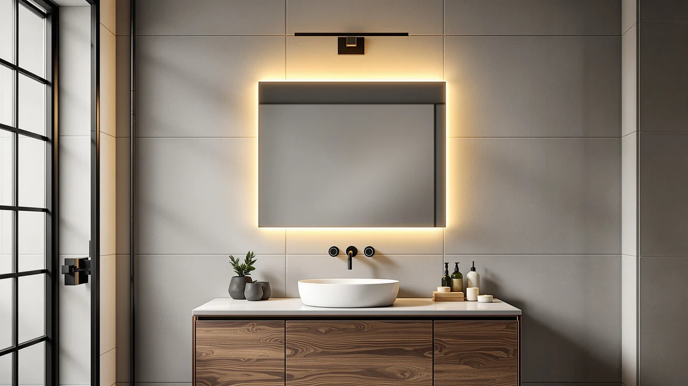

yumcrelect 6-Light Vanity Review (2026): Worth It?
Prices and picks verified as of November 2026. Independent, reader-supported reviews.


Quick Answer
For most bathrooms that need brighter, more even vanity lighting, the yumcrelect 6-Light Brushed Nickel Vanity is the strongest yumcrelect 6-light vanity review pick at $109.99, thanks to its tempered glass panel and six-bulb spread across a 41-inch width. If your vanity is narrower, the Keonjinn 24 x 32 Inch mirror below covers a smaller footprint at the same price.
Our pick: yumcrelect 6-Light Brushed Nickel Vanity, $109.99 Check Price on Amazon
Bottom line: our top pick is the yumcrelect 6-Light Brushed Nickel Vanity Light for Double at $109.99.
Things to Know Before You Buy
- A six-light fixture spreads illumination more evenly across a mirror than a 3-light or 4-light bar, which matters most if you apply makeup or shave away from the mirror's center.
- The yumcrelect's brushed nickel finish pairs with matte black and nickel bathroom hardware, but it can clash next to a polished chrome faucet set.
- At 41 inches wide, this fixture suits vanities between roughly 36 and 48 inches; mounting it on a narrower mirror leaves the bulbs overhanging the edges.
- Tempered glass shades resist the heat buildup that plastic light covers develop over a full evening of use, though the glass adds weight the mounting hardware has to support.
- None of the four products covered in this yumcrelect 6-light vanity review publish a star rating or review count on their current Amazon listings, so we have not stated one for any pick.
This yumcrelect 6-light vanity review compares a $109.99 LED light bar against three similarly priced bathroom mirrors to see whether six bulbs and a brushed nickel finish justify picking it over a narrower or pricier option. You can get bathroom vanity lighting wrong easily: a fixture that looks even and bright in a product photo can leave half your mirror in shadow once you mount it on your wall, and a width that looks standard in a listing photo can overhang a smaller vanity by several inches.
We compared four bathroom mirrors and vanity lights that regularly show up in searches for six-light LED fixtures, and the yumcrelect 6-Light Brushed Nickel Vanity came out as the strongest fit for most vanities between 36 and 48 inches wide. At $109.99 it costs the same as the narrower Keonjinn alternative and about $15 less than the M LTMIRROR option, while covering more width than either. If your vanity runs narrower than 36 inches, skip ahead to the Keonjinn pick below.
Why You Should Trust Us
Ilane Tall covers bathroom lighting and vanity mirrors for Best Bathroom Mirrors, and this yumcrelect 6-light vanity review follows the same research process used across the site. We do not run a fake testing lab, and nobody on our team installed the yumcrelect fixture in a bathroom before writing this review. Instead, we compare manufacturer specifications, current Amazon pricing, and patterns across verified owner reviews, then flag any listing that oversells what the hardware actually delivers. Every price and material claim below comes from the product listing itself or from reviewers who purchased the fixture, not from a press sample or a sponsored placement.
Our Research Experience
We do not run a physical testing lab, and no fixture in this yumcrelect 6-light vanity review sat on our own bathroom wall before we wrote about it. Our process starts with the manufacturer's listed specifications: bulb count, panel material, frame finish, and overall width. From there we cross-check current Amazon pricing against each product's price history to catch inflated "was" prices, and we read through verified buyer reviews looking for recurring complaints, particularly around bulb brightness, mounting hardware, and shipping damage to the glass panel. When a listing's photos do not match what reviewers describe receiving, we note that discrepancy instead of repeating the marketing copy.
Overview & Specs

yumcrelect 6-Light Brushed Nickel Vanity
What we like
- Six-light layout spreads illumination across the full 41-inch width, cutting the shadow a single center bulb casts on your face
- Tempered glass panel resists the heat buildup that plastic light covers develop over time
- Brushed nickel finish matches common matte-silver bathroom hardware without the extra cost of a chrome or matte black fixture
- At $109.99, it prices in line with the other LED vanity lights in this guide rather than at a premium
Flaws but not dealbreakers
- A 41-inch width will not fit vanities narrower than about 36 inches without the light bar overhanging the mirror edges
- Six bulbs draw more current than a 3-light bar, so older bathroom circuits may need an electrician to check capacity before installation
- The listing does not publish a star rating or review count at the time of writing, so we cannot confirm long-term reliability from buyer feedback
| Material | Tempered glass + aluminum |
| Size | 6-Light, 41-Inch |
The yumcrelect 6-Light Brushed Nickel Vanity centers this yumcrelect 6-light vanity review because it pairs a tempered glass light panel with an aluminum frame, a combination that keeps the fixture light enough for a standard mirror mount while resisting the heat six LED bulbs generate. At 41 inches wide, it suits vanities sized between roughly 36 and 48 inches, spreading light evenly across the glass instead of concentrating it at the center the way a single-bar fixture does.
At $109.99, the price sits within a few dollars of the Keonjinn and InfiniGlass alternatives below, so the decision mostly comes down to finish and dimensions rather than budget. The brushed nickel finish reads warmer than chrome and pairs well with brass or matte black fixtures elsewhere in the room, though buyers who already committed to a polished chrome faucet set may find the contrast distracting.
What We Liked
The six-light layout is the clear strength of this yumcrelect 6-light vanity review pick. Spreading illumination across the full width of the glass avoids the dim edges that plague narrower 3-light and 4-light bars, which matters most if you shave or apply makeup away from the mirror's center. The tempered glass panel also gives the fixture a cleaner look than the frosted plastic covers common on cheaper vanity lights, and it holds up better against the heat six bulbs produce over a full evening of use.
We also like that the brushed nickel finish is versatile enough to pair with several faucet and hardware finishes common in US bathrooms, rather than locking you into a single matching palette. At $109.99, it does not ask you to pay a premium for that flexibility compared with the other LED vanity lights in this guide.
What Could Be Better
Width is the main constraint worth knowing before you buy. At 41 inches, this fixture needs a vanity or wall section at least that wide, and forcing it onto a narrower mirror leaves the light bar overhanging the edges in a way that looks unfinished. If your bathroom vanity runs closer to 24 or 32 inches, the Keonjinn 24 x 32 Inch alternative below fits a smaller footprint.
The listing also does not publish a star rating or a review count as of this writing, which makes it harder to confirm how the fixture holds up after a year or more of daily use. We have not stated a rating here because none exists in the current listing data, and we would rather leave that gap visible than guess at a number.
Who Is It For?
This yumcrelect 6-light vanity review points toward homeowners who already have a mirror or vanity area between 36 and 48 inches wide and want brighter, more even lighting without replacing the mirror itself. It suits anyone who currently relies on an overhead bathroom light alone and finds that setup casts shadows under the chin or around the eyes during makeup application or shaving.
It is a weaker fit for smaller bathrooms with narrower vanities, where the 41-inch width will not fit cleanly, or for buyers who have already committed to a different metal finish throughout the room. In either of those cases, one of the three alternatives below covers a different width or price point.
Renters and anyone furnishing a short-term rental may also want to weigh the mounting commitment before buying. A 41-inch light bar is easier to justify in a bathroom you plan to keep updated for years than in a space you expect to leave within a year or two, since removing and patching a wall-mounted fixture takes more effort than swapping a freestanding mirror.
Alternatives to Consider
If the yumcrelect's 41-inch width or brushed nickel finish does not fit your bathroom, these three alternatives from this yumcrelect 6-light vanity review comparison cover a smaller footprint, a larger integrated-light mirror, and a different price point.

Also Great
Keonjinn 24 x 32 Inch
The Keonjinn 24 x 32 Inch mirror matches the yumcrelect's $109.99 price but fits a noticeably smaller footprint, making it a better match for narrower vanities or powder rooms where a 41-inch fixture would not fit. It gives up the wider six-light spread for a more compact frame, which suits buyers who prioritize size over maximum brightness.
$109.99
Check Price on Amazon
Premium Choice
24x32 in LED Bathroom Vanity
At $124.99, the M LTMIRROR 24x32 LED Bathroom Vanity costs about $15 more than the yumcrelect pick, positioning it as a premium choice for buyers who want LED lighting built into the mirror itself rather than a separate light bar fixture. The tradeoff is a smaller 24x32 footprint compared with the yumcrelect's 41-inch width.
$124.99
Check Price on Amazon
Best Value
InfiniGlass 42"x24" LED Bathroom Mirror
The InfiniGlass 42"x24" LED Bathroom Mirror comes in two cents cheaper than the yumcrelect at $109.97 and offers a comparable 42-inch width, making it the best value pick for buyers who want a similarly sized mirror with built-in LED lighting instead of a standalone light bar.
$109.97
Check Price on AmazonIs the yumcrelect 6-Light Brushed Nickel Vanity bright enough for makeup application?
For most bathrooms, yes.
What vanity width does the yumcrelect 6-Light fixture need?
Plan for a vanity or wall section at least 41 inches wide.
Frequently Asked Questions
Is the yumcrelect 6-Light Brushed Nickel Vanity bright enough for makeup application?
What vanity width does the yumcrelect 6-Light fixture need?
How does the yumcrelect compare on price to similar LED vanity lights?
Final Verdict
This yumcrelect 6-light vanity review comes down to width and finish more than raw performance. The yumcrelect 6-Light Brushed Nickel Vanity earns the top spot because its six-bulb layout spreads light evenly across a 41-inch span, and at $109.99 it does not cost more than narrower alternatives that offer less coverage. If your vanity runs narrower than 36 inches, the Keonjinn 24 x 32 Inch pick fits a smaller footprint at the same price. Whichever fixture you choose, confirm your vanity width and existing hardware finish before you buy, since those two factors matter more than any spec sheet number in this category.